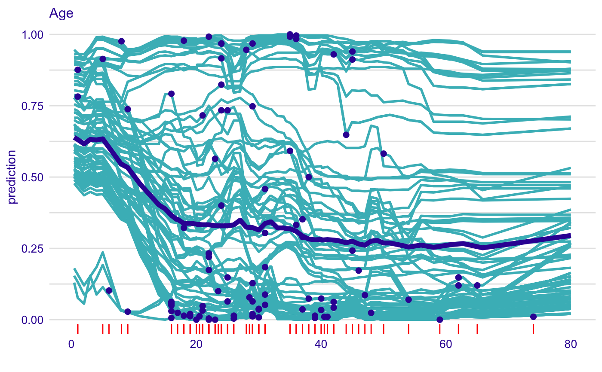
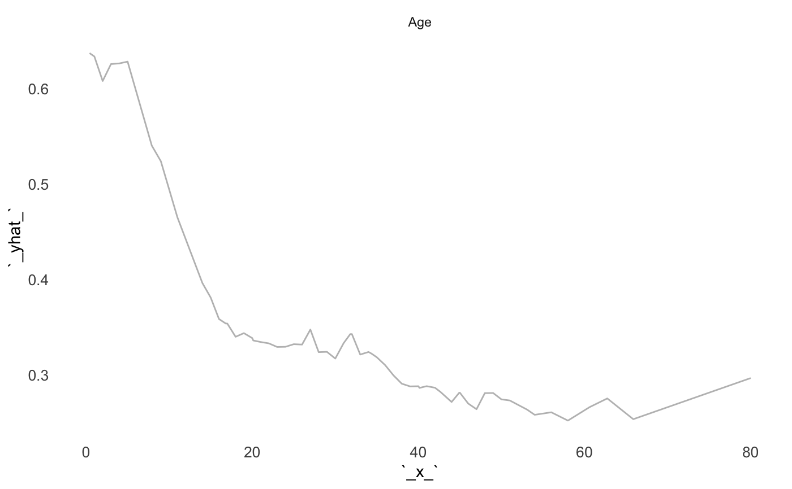

Adds a Layer with Aggregated Profiles
Function 'show_aggreagated_profiles' adds a layer to a plot created with 'plot.ceteris_paribus_explainer'.
# S3 method for aggregated_ceteris_paribus_explainer plot(x, ..., size = 1, alpha = 1, color = "#371ea3", facet_ncol = NULL, selected_variables = NULL)
Arguments
| x | a ceteris paribus explainer produced with function `ceteris_paribus()` |
|---|---|
| ... | other explainers that shall be plotted together |
| size | a numeric. Size of lines to be plotted |
| alpha | a numeric between 0 and 1. Opacity of lines |
| color | a character. Either name of a color or name of a variable that should be used for coloring |
| facet_ncol | number of columns for the `facet_wrap()` |
| selected_variables | if not NULL then only `selected_variables` will be presented |
Value
a ggplot2 layer
Examples
library("DALEX")library("titanic") library("randomForest") titanic_small <- titanic_train[,c("Survived", "Pclass", "Sex", "Age", "SibSp", "Parch", "Fare", "Embarked")] titanic_small$Survived <- factor(titanic_small$Survived) titanic_small$Sex <- factor(titanic_small$Sex) titanic_small$Embarked <- factor(titanic_small$Embarked) titanic_small <- na.omit(titanic_small) rf_model <- randomForest(Survived ~ Pclass + Sex + Age + SibSp + Parch + Fare + Embarked, data = titanic_small) explainer_rf <- explain(rf_model, data = titanic_small, y = titanic_small$Survived == "1", label = "RF") selected_passangers <- select_sample(titanic_small, n = 100) cp_rf <- ceteris_paribus(explainer_rf, selected_passangers) cp_rf#> Top profiles : #> Survived Pclass Sex Age SibSp Parch Fare Embarked _yhat_ _vname_ #> 792 0 2 male 16 0 0 26.0000 S 0.056 Survived #> 792.1 1 2 male 16 0 0 26.0000 S 0.056 Survived #> 342 0 1 female 24 3 2 263.0000 S 0.916 Survived #> 342.1 1 1 female 24 3 2 263.0000 S 0.916 Survived #> 641 0 3 male 20 0 0 7.8542 S 0.000 Survived #> 641.1 1 3 male 20 0 0 7.8542 S 0.000 Survived #> _ids_ _label_ #> 792 792 RF #> 792.1 792 RF #> 342 342 RF #> 342.1 342 RF #> 641 641 RF #> 641.1 641 RF #> #> #> Top observations: #> Survived Pclass Sex Age SibSp Parch Fare Embarked _yhat_ _label_ #> 792 0 2 male 16 0 0 26.0000 S 0.056 RF #> 342 1 1 female 24 3 2 263.0000 S 0.916 RF #> 641 0 3 male 20 0 0 7.8542 S 0.000 RF #> 441 1 2 female 45 1 1 26.2500 S 0.912 RF #> 576 0 3 male 19 0 0 14.5000 S 0.020 RF #> 571 1 2 male 62 0 0 10.5000 S 0.148 RF #> _ids_ #> 792 1 #> 342 2 #> 641 3 #> 441 4 #> 576 5 #> 571 6#> Top profiles : #> _vname_ _label_ _x_ _yhat_ _ids_ #> 1 Age RF 0.42 0.63896 0 #> 2 Age RF 1.00 0.63124 0 #> 3 Age RF 2.00 0.61602 0 #> 4 Age RF 3.00 0.63190 0 #> 5 Age RF 4.00 0.62994 0 #> 6 Age RF 5.00 0.63388 0plot(cp_rf, selected_variables = "Age") + show_observations(cp_rf, selected_variables = "Age") + show_rugs(cp_rf, selected_variables = "Age", color = "red") + show_aggreagated_profiles(pdp_rf, size = 2)plot(pdp_rf, selected_variables = "Age")